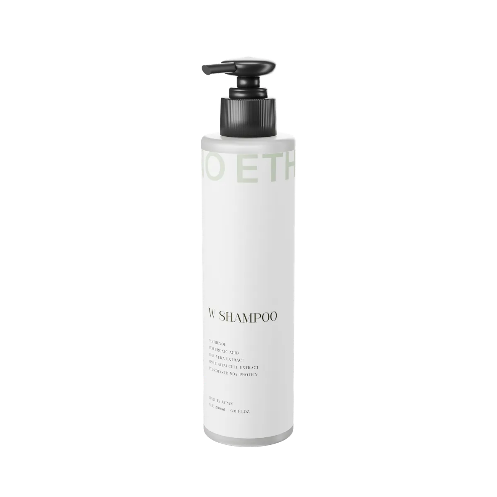
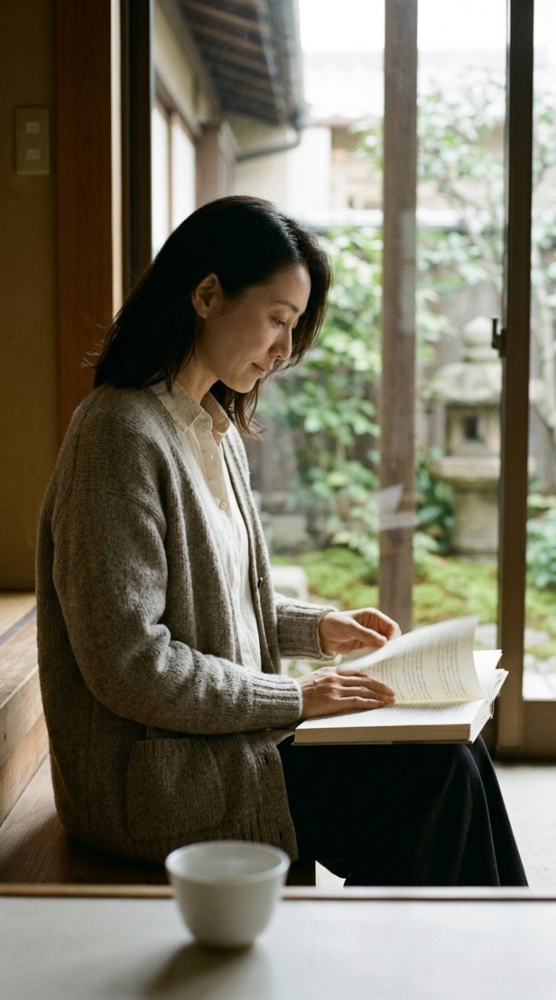

二度洗いで、地肌まで。
頭皮ケアまで、シャンプー1本で。

毎日触れているのに、
手をかけたことのない場所。
毎日のシャンプーは、
頭皮に触れる、いちばん確かな時間。
髪ではなく、頭皮から洗う。
WANO ETHOSの二度洗いは、
地肌のための小さな儀式です。
整髪料、汗、街の空気。
一日をまとってきたものを、
まずは静かにほどいていく。
指の腹で、ゆっくりと地肌に沿わせる。
洗うというより、いたわるひととき。
縦型ショート動画（約15秒）の絵コンテです。
同じ女性が、6つの場面で朝を過ごします。
動画ラフ（約15秒）。下は各シーンのコマ送りです。
Google Flowで生成した絵コンテです。本番は実物の撮影カットと組み合わせます。
頭皮ケアまで、シャンプー1本で。
コンディショナーなしで完結する、
オールインワン設計。
うるおいを保ちながら、すこやかに洗い上げる。
仕上げの一手間を重ねなくても、指がすっとほどける。
ボトルがひとつ減ると、心の置き場所がひとつ増える。
植物由来成分を配合。
うるおいと毛髪のコンディショニングに配慮しました。

自然素材の質感と、やわらかな光。
コンディショナー不要のオールインワン設計です。仕上がりの感じ方には個人差があります。
1度目で一日の汚れや整髪料を洗い流し、2度目で濃密な泡をなじませて頭皮をいたわります。WANO ETHOSがおすすめする洗い方です。
200mLで、毎日の2ステップ洗いで約1ヶ月〜1ヶ月半が目安です。髪の長さや量によって前後いたします。
いいえ、あえてシリコンを採用した処方設計です。洗髪時の摩擦に配慮するため、機能的な成分をバランス良く配合しています。